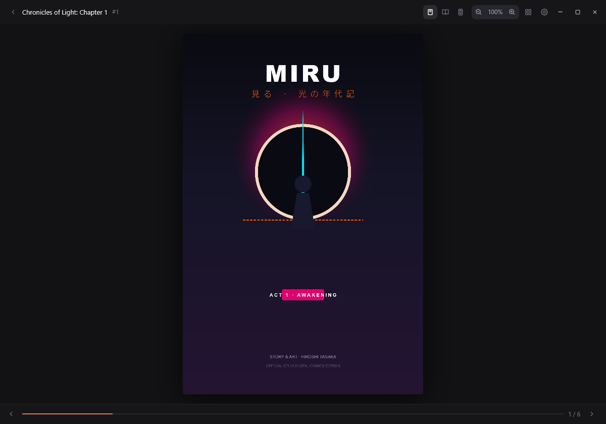
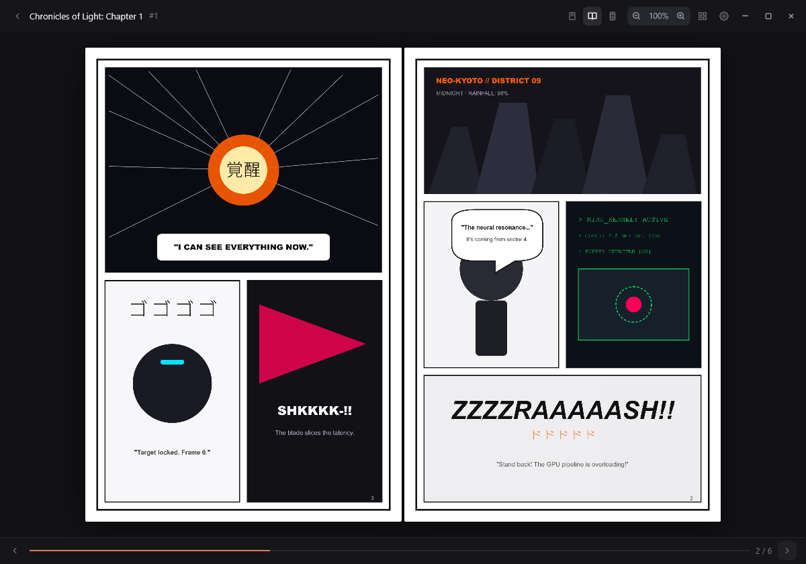
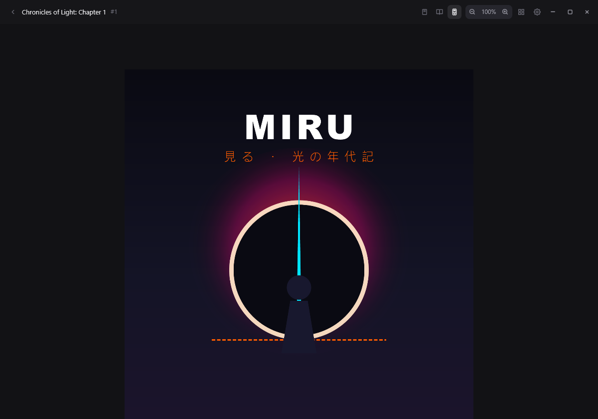
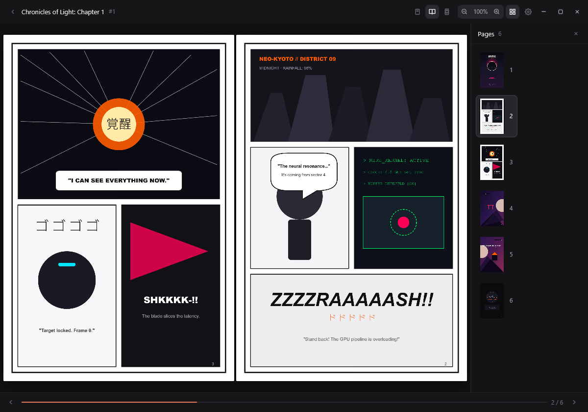
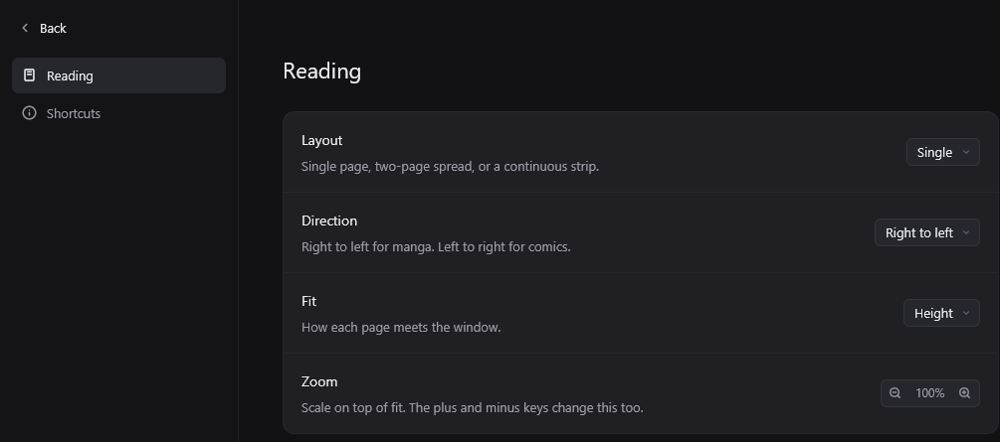

Native down to the frame
Rust and GPUI, the GPU-accelerated framework behind Zed. Metal on macOS, DirectX on Windows, Vulkan on Linux. Instant launch, smooth scrolling, no Electron.
Miru opens .cbz and .cbr files straight into a GPU-rendered window —
single page, two‑page spread, or a continuous webtoon strip — with your library and
reading history kept on your own disk.
Reads the archives you already have
Three ways to read
The same book, laid out three ways. Pick one and the reader switches between them without losing your place.



Why native
Rust and GPUI, the GPU-accelerated framework behind Zed. Metal on macOS, DirectX on Windows, Vulkan on Linux. Instant launch, smooth scrolling, no Electron.
CBZ and CBR, decided by the archive header rather than the extension. Pages sort naturally, so page‑2 comes before page‑10, and ComicInfo.xml is read when present.
Single page, two-page spread, or a continuous strip. Change your mind halfway through a chapter and the layout follows you without losing the page.
Manga reads right to left, western comics left to right. One setting flips the whole book, and the arrow keys follow it.
Recently read comics, the page you stopped on, how far you got, and the mode you were reading in. A JSON file in your home directory. No account, no telemetry, no cloud.
Space turns the page, M cycles the layout, T opens the page list, D flips the direction. Every control in the reader works without touching the mouse.
The window
A sliding drawer of every page in the book, with the one you are on marked. T opens it from anywhere, and it slides in over the art instead of replacing it.


Layout, direction, fit and zoom live behind one comma key. Nothing sits on top of the page you are reading, and every choice is remembered for the next book.
Keyboard
Download
Miru is a native desktop app built on GPUIX. Grab a build from the releases page, or run it from source; it needs Bun and a GPU.
From source
bun install
bun --hot app.tsxQuestions
Comic archives: .cbz (ZIP) and .cbr (RAR). Miru decides by
reading the archive header rather than trusting the extension, so a comic named
.zip still opens. A ZIP that is not a comic is refused with a clear
message instead of a broken reader.
No. There is no sign-up, no subscription and no telemetry. Miru never opens a network connection. The files you open are the only files it reads.
In history.json, inside ~/.miru on your machine, or
wherever MIRU_HOME points. It records the file, the page you stopped on,
how far you got, and the layout and direction you were reading in, so the next chapter
opens where you left it.
Yes. Miru reads right to left for manga and left to right for western comics. One setting flips the whole book, and the arrow keys follow the direction you chose rather than fighting it.
Windows, macOS and Linux, since Miru is built on GPUIX and GPUI. The custom titlebar drag and Aero Snap are Windows-only for now; on the other platforms the reader itself is unchanged.
Never. Miru is a local reader, not a service. Everything happens on your machine, including the archive extraction and the rendering.